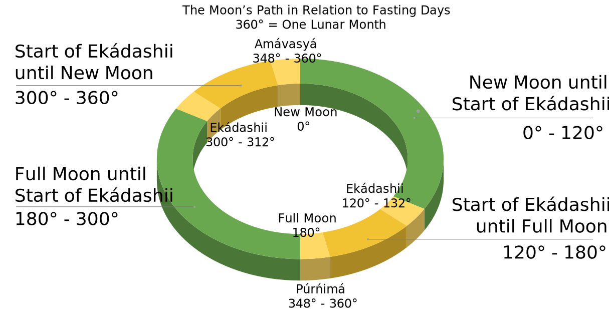

Science of Ananda Marga Upavasa Fasting
Synopsis
Ananda Marga upavaÌsa fasting dates are based on the Vedic solar day (sunrise to sunrise) which occur closest to the relevant lunar phases (ekaÌdashii, amaÌvasyaÌ/new moon and puÌrnÌimaÌ/full moon). The lunar phases are always the same around earth, and the their calculated values are quite consistent around the web. Sunrise however is something very complex to calculate, and needs to be defined properly in order to decide the correct fasting day.
This software, the AÌnanda MaÌrga UpavaÌsa Fasting Calendar (AMUFC), uses scientic models for the calculations, and offers the possibility to use your position, time zone, and sunrise of choice, for calculating fasting days.
Methodology
Many of the technicalities for the fasting chart are explained on the Ananda Marga – New York Sector's website.
Here follows some quotes from that website:
The actual fasting day is calculated to include most of the indicated lunar phase.
Calculations follow the Indian convention of starting the days at dawn rather than midnight.
These calculations for fasting dates are based on instructions given by Guru Bábá to Ac. Jagadiishvarananda Avt. who was responsible for printing the Ananda Marga Diary. The Diary has always included the official fasting dates for Ananda Marga. Dada explained the system in 1976, reflected in the notes below…
For Ekadashi, (literally the 11th day after the new and full moons), we begin with the starting and ending times of the lunar day (...). The system is that the proper fasting day will be the solar day (from sunrise to sunrise) whose maximum time falls within the starting and ending times of the Ekadashi lunar day. The source data is based in Varanasi, India as per instruction by Guru Bábá.
For those who fast on Purnima (full moon) and Amavasya (new moon), the same process is followed.
Moon Phases
Moon phases such as new and full moon can be described as degrees of a circle. Such a circle is illustrated in the video and image below:
Tithis
The relevant moon phases for Ananda Marga fasting are called tithis. At the time of writing, you can see on the fasting chart on the Official Website of Ananda Marga in Europe - Berlin Sector, that the start and end times are based on tithis (specifically, the times of the tithis named ekaÌdashii, amaÌvasyaÌ and puÌrnÌimaÌ are displayed).
Moon phases are always the same all over earth, and most tithi calculations around the web just differ with a few minutes of time (and are displayed in India Standard Time).
The Relevant Tithis for Ananda Marga Upavasa Fasting
- EkaÌdashii (11 tithis/lunar days after new/full moon): occurs at angles 120° - 132° and 300° - 312°
- AmaÌvasyaÌ (New Moon): occurs at angles 348° - 360°
- PuÌrnÌimaÌ (Full Moon): occurs at angles 168° - 180°
When the tithis occur, and how long they are, are not that simple to calculate. Quite some knowledge of astromony and mathematics is required (or in the case of this software, the AMUFC, astronomical software libraries were used for the calculations. See Code.)
Understanding the Definitions of EkaÌdashii, AmaÌvasyaÌ, and PuÌrnÌimaÌ
Other than ekaÌdashii occuring 11 tithis after new/full moon, ekaÌdashii starts exactly 120° after the moment of new/full moon. That is exactly one third of the circled path the moon travels around earth. Furthemore, the start of ekaÌdashii until the moment of the upcoming new/full moon is exactly 60° of the moon's path around earth. So if you imagine the lunar path around earth forming a geometric shape in space, starting with ekaÌdashii and ending with new/full moon, a 60° arc is formed. If you let the arc start with new/full moon and end with the beginning ekaÌdashii, a 120° arc is formed.
AmaÌvasyaÌ and puÌrnÌimaÌ are lunar days which end at the moment of new/full moon respectively.
More about 60° angles:- 60° angles are found in equilateral triangles and the unit circle in trigonometry.
- The unit circle is a fundamental tool in astronomy because of its connection to trigonometry.
- The pratik consists of two equilateral triangles.
WikiPedia on Tithis:
In Vedic timekeeping, a tithi is a "duration of two faces of moon that is observed from earth", known as
milа̄lyа̄ (Newar: 𑐩𑐶𑐮𑐵𑐮𑑂𑐫𑐵𑑅, मिलाल्याः) in Nepal Bhasa, or the time it takes for the longitudinal
angle between the Moon and the Sun to increase by 12°. In other words, a tithi is a time duration between
the consecutive epochs that correspond to when the longitudinal angle between the Sun and the Moon is an
integer multiple of 12°. Tithis begin at varying times of day and vary in duration approximately from 19 to
26 hours. Every day of a lunar month is called tithi.

The astronomical basis of the Hindu lunar day.
The image (credit: User:Freedomji) and video above are taken from Wikipedia.
Read more about tithis on WikiPedia.
Calculating Fasting Dates Without Tithis
This is just an idea that could be used as an alternative method if ever needed. Since it's easier to find programming libraries that calculate dawn, new moon and full moon, an alternative method to get a fasting date could be to get the geocentric phase angle at the sunrises/dawns that occur near the tithis.
This way you wouldn't calculate the time which the tithi spans over the solar day, but instead which angle the sunrises near the tithi has. You can then calculate which solar day is the closest to the tithi by angular comparison, rather than time span.
For example, suppose sunrise1 is when the lunar phase is 130°. This means the sunrise1
is during EkaÌdashii (120° - 132°). Sunrise0 is at lunar phase 118°, and sunrise2 is at lunar phase 142°.
The day between sunrise0 and sunrise1 spans over the lunar phase between 118° and 130°, and 8° of those are during EkaÌdashii.
The day between sunrise1 and sunrise2 spans over the lunar phase between 130° and 142°, and 2° of those are during EkaÌdashii.
So the conclusion is that the day between sunrise0 and sunrise1 is the fasting day, since 8° is larger than 2°.
Dawn and Sunrise
Ananda Marga's fasting system uses the Vedic solar day to determine the date of a day. In some ways it's natural to think of the day starting in the morning. The day actually starts in the morning (when most people wake up), rather than in the middle of the night (when most people are asleep, or have not even gone to bed yet). However, there are number of problems that arise when using sunrise as the start and end of the day.
Issues of Calculating Sunrise and Dawn
- The day starts at a different time every day, and needs to be calculated.
- The day starts at different times in different locations and elevations above sea level - even when those locations are within the same time zone. The accuracy of the position also affects calculations.
- The definition of sunrise differ from place to place, even within the Vedic community (see this discussion and this one). This has a rather big impact on calculating the fasting day, since the choice of sunrise definition sometimes moves the fasting day from one day to another.
- Sometimes, in some places (far north and far south), during summer and winter, there are no sunrises. Namely during midnight sun and polar night (or depending on the definition of sunrise, a larger part of the world).
- Atmospheric refraction, which causes celestial bodies to appear higher above the horizon than they would if the Earth had no atmosphere.
Defining Sunrise
To get the Ananda Marga fasting system correct, we need to define the following:
- What is a sunrise? In other words, when exactly does the solar day start? At what position of the sun?
- What is a sunrise during midnight sun and polar night? In other words, what happens when the defined position of sunrise does not occur, because it is not reached certain days of the year?
Sunrise should probably be astronomical, nautical or civil dawn (see illustration below), or when the top of the sun peeks above the horizon.
Calculating Sunrise
These values are used for calculating sunrise/dawn:
- Date and time
- Latitude and Longitude
- Elevation of the location above sea level
- Height above ground (depending on the definition of sunrise). This height is above the elevation, for example considering the height of a person, and their position (sitting or standing, on the ground or at the top of a skyscraper).
There are different concepts of dawn and sunrise in modern science. On the illustration below you can see that the sun is below the horizon during different twilights, and in the center of the horizon at sunrise. The beginning of these twilights are sometimes refered to as dawn (astronomical, nautical and civil dawn).
 Credit: ASTRONOMY: ROEN KELLY, after Aurora Borealis Observatory
Credit: ASTRONOMY: ROEN KELLY, after Aurora Borealis Observatory
Accuracy of the Ananda Marga Fasting Calendar (AMUFC)
This software is based on Astronomy Engine, a software engine accurate to within ±1 arcminute (1⁄60th of a degree). It is based on the authoritative and well-tested models VSOP87 and NOVAS C 3.1.
These models determine the precise positions of celestial bodies like stars, planets, the Moon, and the Sun at a given time. However, sunrise is influenced by additional factors beyond its exact position. Sunrise is affected by the atmosphere which refracts sunlight, causing the Sun to appear slightly higher above the horizon than it actually is. This affects the exact timing of sunrise and sunset. Also, sunrise depends on your location on Earth.
Atmospheric refraction, which causes celestial bodies to appear higher above the horizon than they would if the Earth had no atmosphere. Astronomy Engine uses a correction of 34 arcminutes. Real-world refraction varies based on air temperature, pressure, and humidity, which are not taken into account.
Einstein's Theory of Relativity
Einstein's theory of relativity does have some subtle effects on the motion of celestial bodies, including the Moon. One effect is called relativistic precession, which causes the Moon's orbit to slowly wobble over time. However, the magnitude of these relativistic effects is incredibly small. They have a negligible impact on the overall geometry of the Earth-Sun-Moon system, which determines the Moon's phases. For most astronomical applications, including calculating lunar phases, the influence of relativity is insignificant. The high precision of models like VSOP (within 1 arcsecond for thousands of years) already accounts for the vast majority of the Moon's motion.
The impact of relativity on sunrise and dawn calculations is also negligible for most purposes. Due to Earth's rotation, different parts of the Earth experience slightly different gravitational strengths. According to relativity, time runs slower in weaker gravity. This effect is minuscule but can cause a slight time difference in sunrise depending on your location. Gravity can bend light slightly. This effect is extremely weak, but it can theoretically cause the Sun to appear a tiny bit higher above the horizon during sunrise and sunset compared to a purely Newtonian calculation.
Higher Accuracy
To achieve higher accuracy, perhaps these methods could be used:
- https://github.com/variar/elp2000-82b
- Eclipse Predictions by Fred Espenak: This model provides highly accurate predictions for lunar phases and eclipses, taking into account various perturbations and corrections.
- Solar and Lunar Almanac (SAA): This model includes detailed algorithms for calculating sunrise and sunset times, considering the Earth’s axial tilt and orbital eccentricity. NOAA Solar Calculator: The National Oceanic and Atmospheric Administration provides a solar calculator that accounts for atmospheric refraction and other factors to give precise sunrise and sunset times. These models incorporate more detailed corrections and perturbations, making them suitable for high-precision astronomical calculations.
- https://www.researchgate.net/publication/228789607_Comparison_between_high_precision_precession_models_for_the_ecliptic_and_the_equator